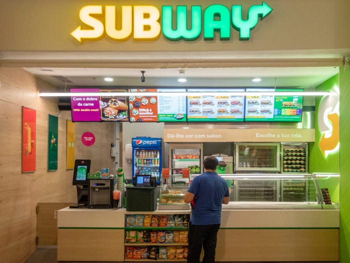

Subway (also known as Doctor's Associates Inc. is an American fast food restaurant franchise that primarily sells submarine sandwiches (subs), salads and beverages. It was founded by the 17 year old Fred DeLuca and financed by Peter Buck in 1965 as "Pete's Super Submarines" in Bridgeport, Connecticut. The restaurant renamed to Subway two years later, and a franchise operation began in 1974 with a second restaurant in Wallingford, Connecticut. It has since expanded to become a global franchise. Subway serves a array of topping choices allowing the customer to choose which toppings they want on their sandwich. The past Subway slogan, "Eat Fresh", was intended to indicate the fresh ingredients used in their sandwiches. It is one of the fastest-growing franchises in the world and, as of October 2019, had 41,512 locations in more than 100 countries. More than half its locations (23,928 or 57.6%) are in the United States. It also is the largest single-brand restaurant chain, and the largest restaurant operator, in the world. Its international headquarters are in Milford, Connecticut.
 Back
Back